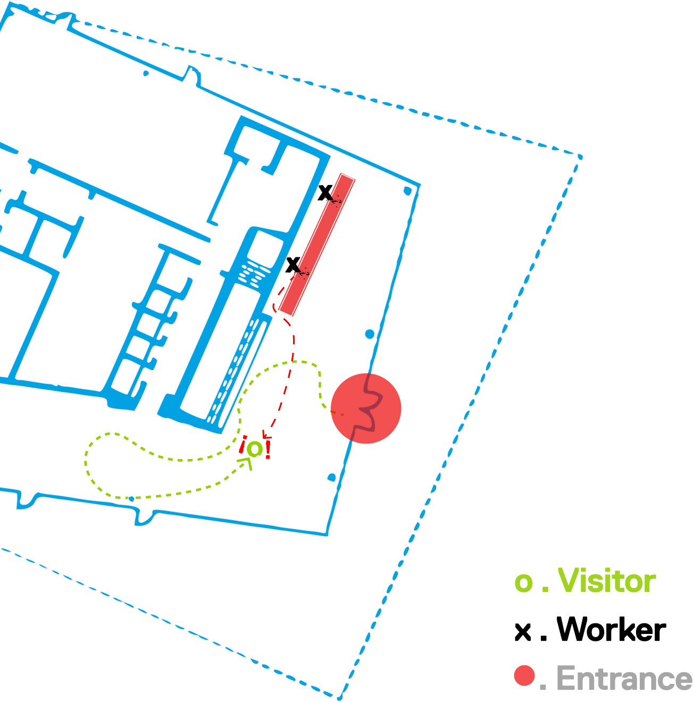

the polygon
gallery

Resolving customer/worker pain points while supporting the galleries goal of becoming the
cultural anchor of the Shipyards Community.

Roles
Project Scope
Team
Tools
Research, Strategy, Graphic Design, Product Strategy
13 week school project - IAT 333 - Spring 2023
Hugo Duran, Gregory Withers, Abigail Hao,
Jung-Yeon Lee, Cindy Ye
Figma
brief
For a 13 week class project, my team was tasked with finding a client and exploring a design intervention. We were lucky to be able to work with North Vancouver’s
The Polygon Gallery.
the client
Known worldwide for it’s award winning architecture and its relentless strive to create pathways for new voices within lens based media art, The Polygon Gallery is
dedicated to creating a welcoming, barrier-free space for everyone, allowing art to be accessible to anyone interested.

identifying the problem ethnography
Based on ethnography done throughout the totality of the project, we identified troublesome touchpoints early in the Polygon’s Gallery experience. The gallery’s architects
had the form of the building in mind, assuming people would be able to locate themselves through a generally small venue space without problems. While the
architectural beauty is undeniable, the functionality leaves more to be desired from.

The main issue entails the entrance of the gallery. From our own personal experience and external ethnography, we realize the layout of the gallery is unlike any other
“common” gallery. The general idea of a step based layout can not be found at The Polygon, leading patrons of the gallery completely ignoring the front desk at which
the ticket buying process is available. Visitors are mostly unaware of the ethics and etiquette of the gallery, making the workers have to chase down the
wondering visitors unaware of these rules.

At this point, we had a design workshop designed to reveal what space of the gallery is most important to them. We participated alongside Asia Harvey, the Gallery’s
Sales Manager, and Rhonda Schultz, the Gallery’s Guest Services & Volunteer Supervisor. We participated in 3 exercises;


journey framework

3-D mockup